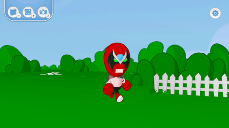
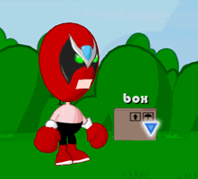

10 |
De wereld verkennen |
 |
Rondlopen is simpel. Wijs gewoon naar een plek op de grond waar Strong Bad heen moet en druk op 
Je kunt de wereld van Strong Bad verkennen door te reageren op voorwerpen en mensen. Wanneer de aanwijzer zich in een interactief gebied bevindt, verandert de kleine, witte stip in een blauwe driehoek. Wanneer dit gebeurt, druk je op |
 |
 |
 |